7
Attributes
A top-down satirical RPG about waking up inside the slop, and what it costs to stay awake.
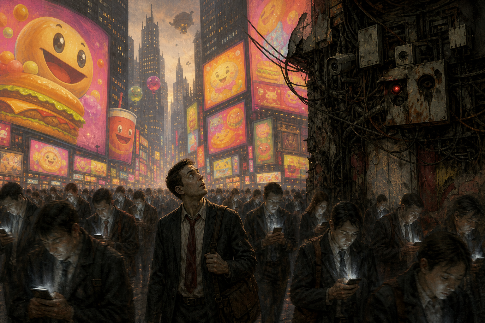
Officially, everyone here is equal. There's a flag for it, ads about it, and a national holiday where every brand recolors its logo to say so. Unofficially, and you know this the way you know which stair creaks, there are exactly two kinds of people: the ones who own things, and you.
The owners have a word for your kind. They don't say it to your face; they say it in the meeting, in the margin, in the metadata. You're a Gnoy, one head of the great contented herd, the Gnoym, the demographic the entire apparatus exists to feed. It isn't a slur. It's worse than a slur. It's a category. It's printed on the forms. You qualify for the Gnoy rate, the Gnoy plan, the Gnoy-friendly redesign. Nobody ever sat you down and explained that you were one. Nobody had to. That's the elegant part.
What they feed the herd is slop, and the word is doing honest work. Slop is anything engineered to go down easy, never fill you, and keep you chewing: the meal, the feed, the subscription, the outrage timed to land right before bed. The faction that manufactures it is named, with no embarrassment whatsoever, The Trough. They are not hiding the metaphor. They've run the numbers on hiding it and found it isn't necessary. You keep eating.
The ones holding the ladle are the Xyoners, five machines (food, media, faith, enforcement, money) that carve up the world the way wolves carve up a field. They compete viciously for your attention and never once for your obedience; on the matter of the herd, they are in perfect agreement. And all five answer upward to the same small, much older table, which the awakened will tell you is either a board of directors or something a great deal older and worse. Gnoy Simulator is about the morning the slop tastes like what it is, the herd starts to look like a herd, and you commit the one act a Gnoy is never supposed to be capable of: you notice.
The city has twelve neighborhoods and not one of them is really for you. There's the district where you sleep, the district where you work, the district where you're sold things, and the district where the people who sold them to you keep the money afterward. You can walk every inch of it. You will not be welcome in most of it.
Each block keeps its own Heat: a quiet tally of how much trouble you've been lately. Make noise in one and the others stay calm, which is the closest thing to mercy the map offers. And the city only ever shows you what your eyes are open enough to see. The back-alley shortcuts and the camera blind spots were always there. You just weren't awake enough to find them yet.
Five machines own everything a Gnoy will ever touch: what you eat, what you watch, what you're told to believe, who gets to arrest you, and what the whole arrangement costs you by the month. They compete ferociously for your attention and not once for your obedience, on the herd, they agree. They call the understanding The Arrangement, and they would be genuinely hurt to hear you call it a conspiracy. It isn't one. It's just good business, and you are the business. Each is a wing of the story you can investigate, infiltrate, or burn down, and almost everything later on this page is something one of them is doing to you right now.
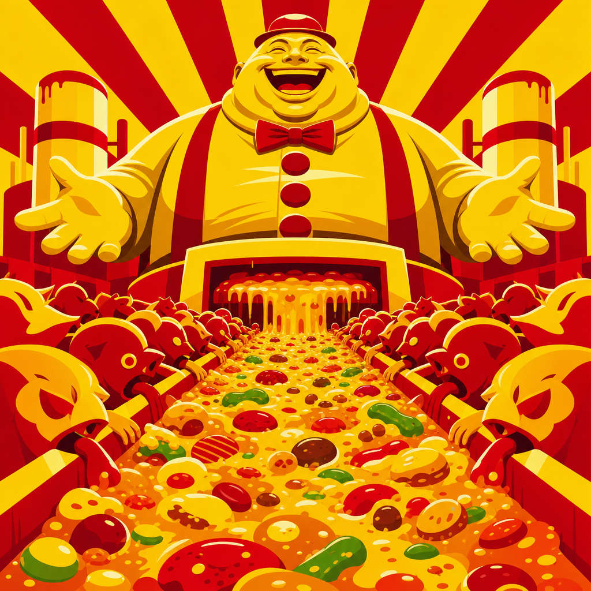
The ones who feed you and own the dirt your apartment sits on. Fast-food empires, agribusiness combines, the developers who priced out the neighborhood three mayors ago.
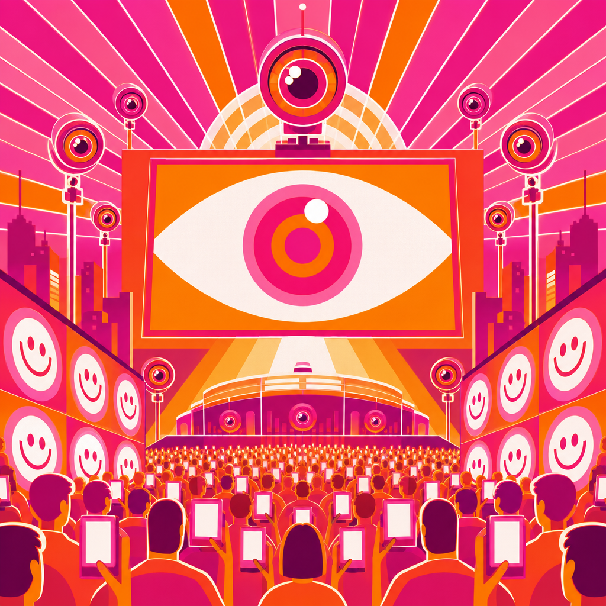
They do not lie to you. They choose the camera angle, the soundbite, the next thing you see. The narrative is the weapon, and the algorithm has your watch history.
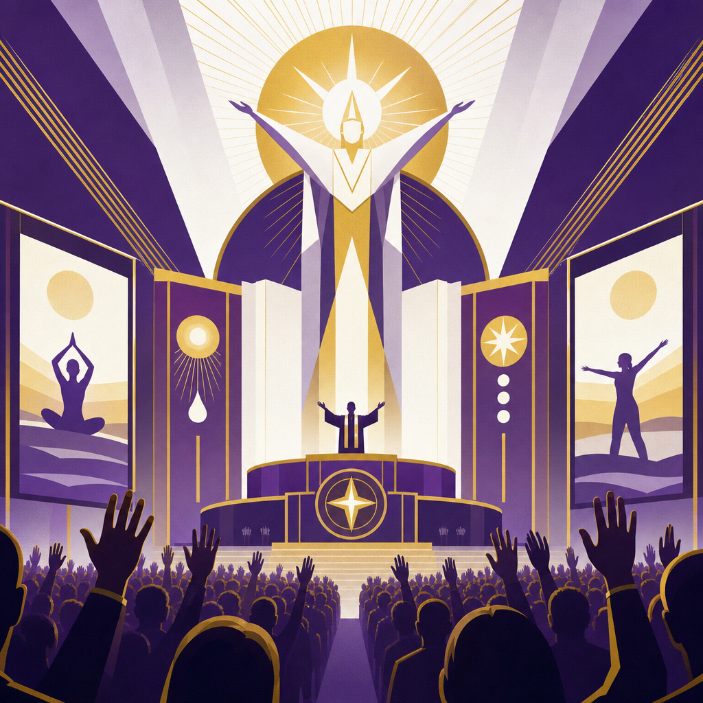
Every faith and political faction has a profitable parasite, and the Pulpit collects them all. Equal-opportunity satire, with one curious exception: there is a single older thing the Pulpit never jokes about and never names, and the awakened have theories about why.
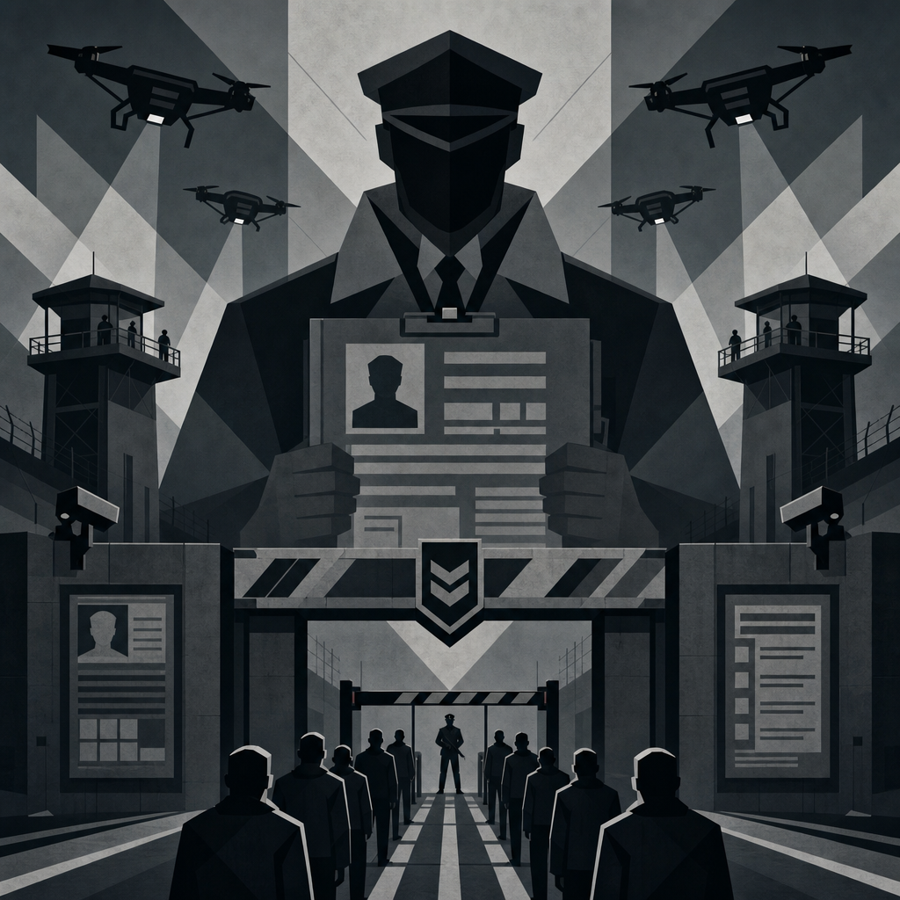
The ones building a single shared file with your name on it. Operatives, Glowies (undercover informants), the contractor your boss reports to. They have a quiet rivalry with The Feed, useful, if you survive.
Benevolent Billionaires. Debt Dealers. The Number Go Up Guy. They never become fully hostile, which is the most unsettling thing about them. And the Vault's oldest accounts, the ones the whole structure rests on, have no living signatories and have never once been closed.
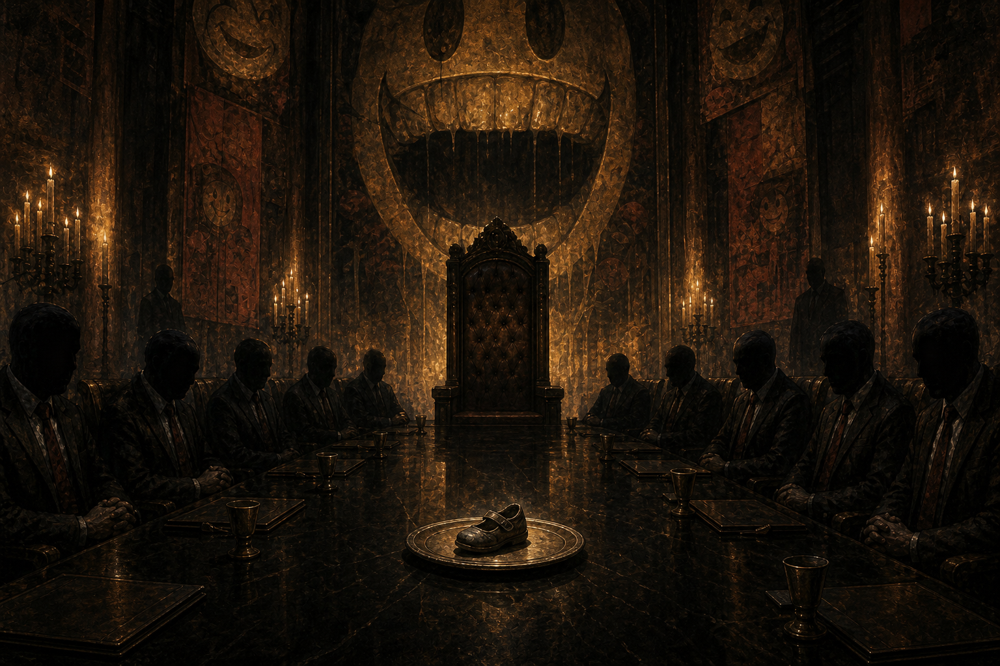
The five factions are not the top of anything. Above them sits the Inner Ring, a membership of unknown size whose names are redacted out of every document you will ever pull. The Trough, the Feed, the Pulpit, the Cage, and the Vault are only its hands. What is on the record is bad enough: they take land, they buy elections, they keep heads of state on a leash by file, and the youngest names in the city's missing-persons rolls have an ugly habit of belonging to the wrong neighborhoods. The Ring does not deny any of it. It simply never appears in the photograph.
What the Ring actually is never makes it onto any record. The deepest forum threads, and a few of your own Inner Voices once your Awakening runs high enough, swear it is older than the country and older than money: an appetite the oldest scripture warns about and no congregation takes literally, a thing the believers flatter with the name the Sated One so that it might, someday, finally be. Fed children quietly at the center, the theory goes, and everyone else slowly, on subscription. You cannot tell whether you are fighting a three-thousand-year-old cult or very rich people who found the costume useful. After long enough, that stops mattering. The game never confirms a word of it.
What is certain: one of them has been feeding you intelligence since the first case, grooming you to gut their rivals for them. You will not learn which one until you decide it is over.
Your alarm sells you something. You believe it. You eat a fridge-cold breakfast from a brand you didn't choose. You scroll a feed you didn't ask for on the commute. Seven subscriptions auto-deduct from your account every month. You clock into a desk job at Greystone Data Solutions. By every available metric, you are doing fine.
Then a news event happens in front of you. You watch it happen. You watch the same event on the Feed that night. They are not the same event. The footage has been edited. A coworker asks what you think. Whatever you answer permanently locks his fate. And the game, very quietly, begins.
A coworker. He asks what you think about the edited news segment. Your answer, before you understand the stakes, permanently decides his path: a forever-compliant Gnoy who stays out of your way, your first recruit and the most loyal member of your cell, or a Glowie the Cage planted from day one specifically to watch you. You will not know which one you chose until it is far too late. He is only one character. The game has a lot of Daves.
Time is the scarcest resource in the game. Each day breaks into four time slots. You pick what to do in each one. Sleep advances the clock, ticks the world forward, deducts your subscriptions, restores your Cope. Whatever you don't choose, you don't get back.
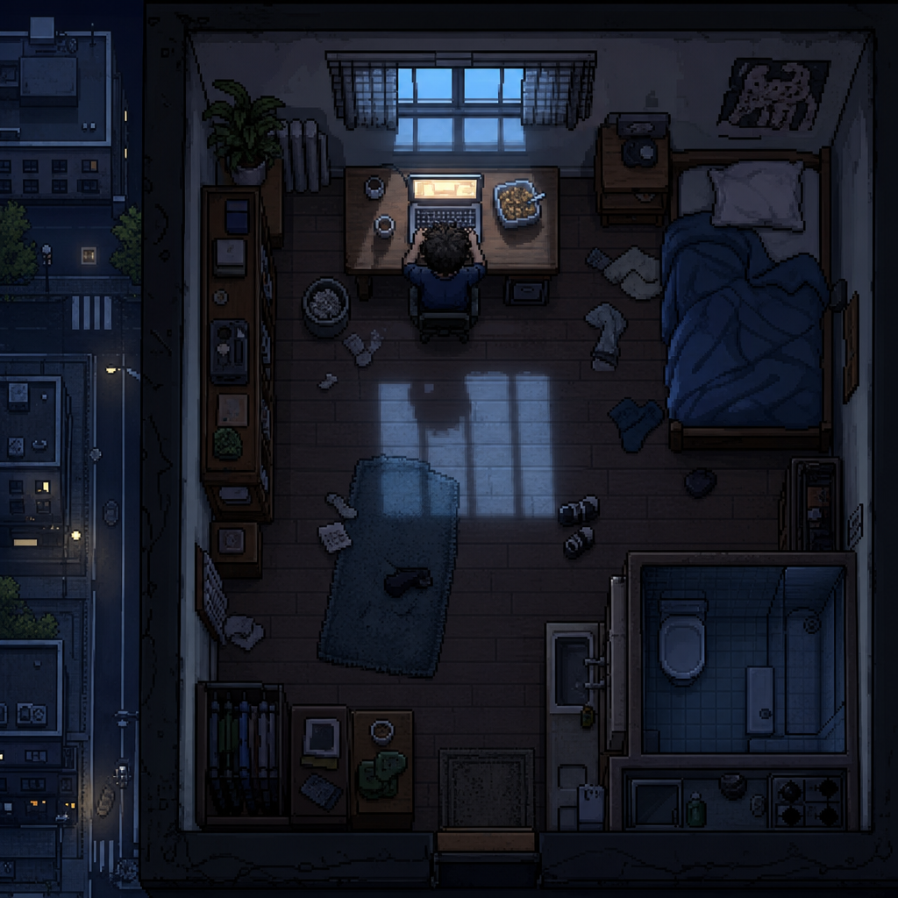
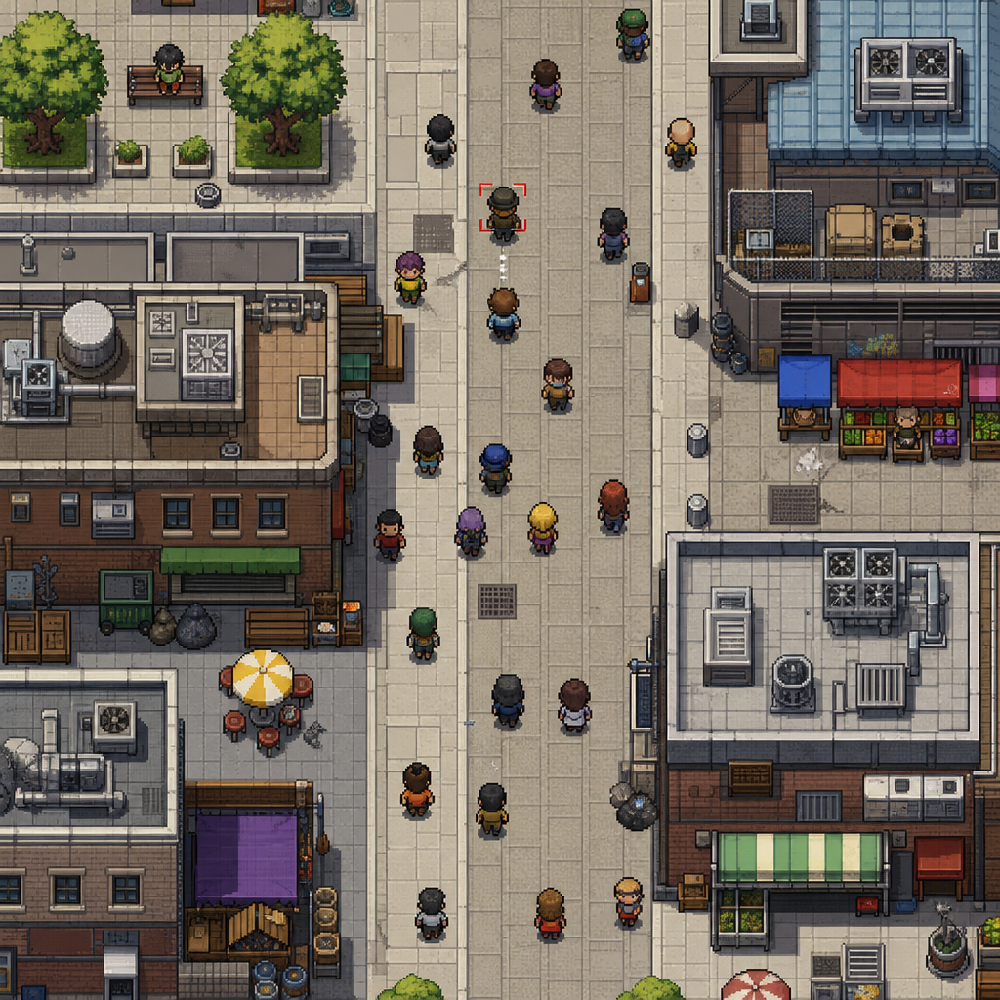
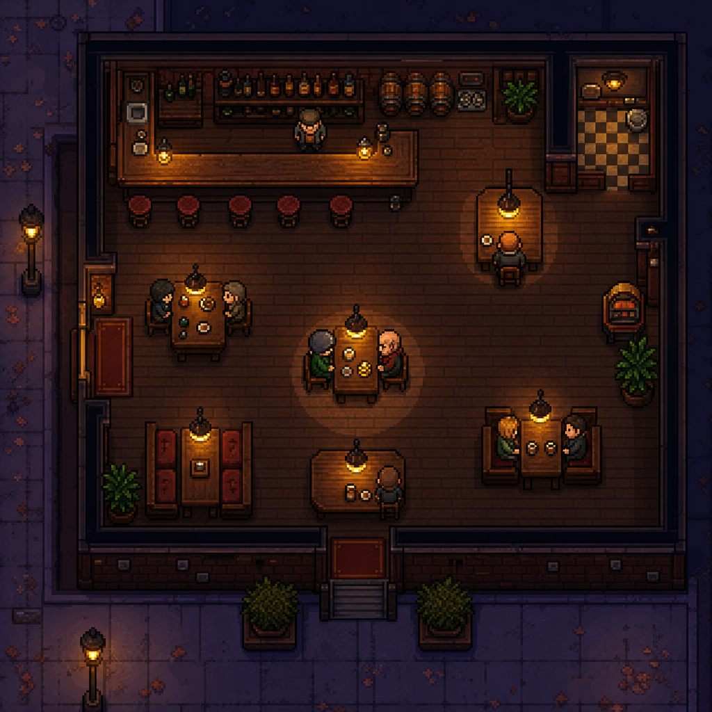
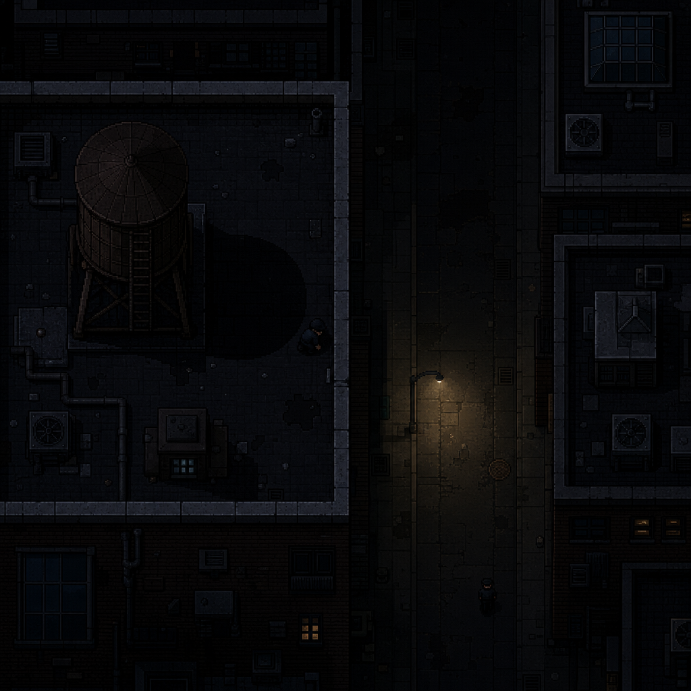
Here, canceling a subscription is a tiny act of disobedience, and the system treats it like one. You open your bills, tap "Cancel SloppFlix," and grind through three retention screens, a guilt-trip popup, and a phone tree designed to make you give up. You confirm anyway. A typewriter stamp slams the page. Within the hour, The Feed runs a segment on the "growing trend of anti-subscription extremism," and somewhere in a government file a flag with your name on it goes up. You woke up a little; the world noticed. That trade, small private defiance, oversized public consequence, is the whole game in miniature.
Fast food restores BODY mid-combat with no in-moment penalty. The cost is Slop Damage, a separate accumulation track that drifts your attributes down over the campaign, visibly changing your character's posture and skin. You can detox with Anti-Slop and Gymmaxx investment, but never fully reverse it. The system rewards short-term compliance with long-term decay. That is not a metaphor. It is the damage formula.
The investigation layer is a literal corkboard in your apartment. You collect evidence by living, photos taken with your phone, documents found in the field, audio recordings from operative jobs, forum posts you saved. Then you walk through five steps.
Drag evidence onto the board. Photos, documents, audio waveforms, forum-thread screenshots, each one a real inventory item.
Click one piece of evidence, drag to another. A skill check fires against your investigation stats, Rabbit Hole, Glowie Sense, Lore Depth.
Mark evidence Verified / Uncertain / Planted. The Cage actively plants false leads, the game will not tell you when you're wrong.
Move to the Dossier. Choose platform × framing × audience. See the Credibility and Heat meters move in real-time as you pick.
Two-step confirm. A typewriter-stamp animation fires. Publication is permanent. The Feed cannot un-cache it. You cannot undo it.
The connection holds. You also get a piece of hidden context the world wasn't going to volunteer.
The connection holds. Publishable at full Credibility weight.
You can publish it, but at a Credibility cost if you're wrong. And the world will not tell you whether you're wrong.
Conversations are first-class gameplay. You see how hard each line is to pull off up front, a difficulty number the game calls the DC, but never how it will land. Up to 24 named Inner Voices can interrupt you mid-conversation, each with its own typography and personality. You can drop physical items from your pocket into a conversation to unlock lines you couldn't otherwise reach. Two villains are fought entirely through dialogue, multi-stage composure duels where the wrong framing costs you evidence and Heat.
You see the difficulty number for every check. You never see the consequence. A "safe" low-DC choice might be the worst answer in the room.
Drag a photo, a USB, or a burner phone from your inventory onto the conversation. Lines you couldn't say become available. The room changes.
Every word you say is recorded forever. NPCs quote you back weeks later. The Cage interrogates them, your words enter your dossier verbatim.
Combat is fast and brutal. Restart in under half a second when you die, but the world remembers (broken doors stay broken, the bodies don't move). Stats modify the dials but never grant invincibility. Body is your hit threshold. Gymmaxx is your move speed. Hands is your damage. Ghost Mode unlocks a stealth first-strike. When you go down, you choose: YIELD for a managed capture (you wake up in a Cage holding cell, with one playable escape attempt) or ATTEMPT ESCAPE for a single fast risky roll.
The enemy adapts. The faction Dossier reads your build and dispatches counter-tactics on the next encounter, stealth-heavy gets thermal sensors, broadcast-heavy gets pre-emptive misinfo, melee-heavy gets ranged-only squads. There is no correct build. There are only builds the world has prepared a response for.
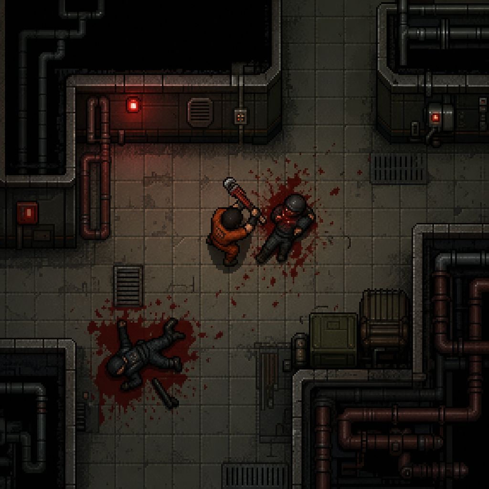
Pipe wrench, bat, crowbar, fire extinguisher, a skateboard, a heavy enough book. Whatever's bolted to the wall or lying in the alley. Scales with Hands, the working man's end of an argument.
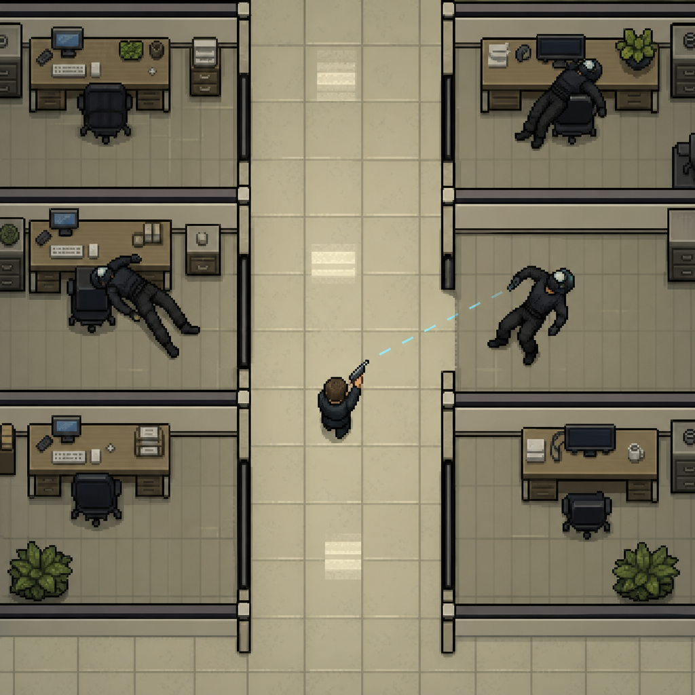
Taser, tranq dart, pepper spray, sleep gas, net launcher. Puts a target down without putting them in the ground, and without spiking your Heat. The pacifist's kit, and also the kidnapper's.
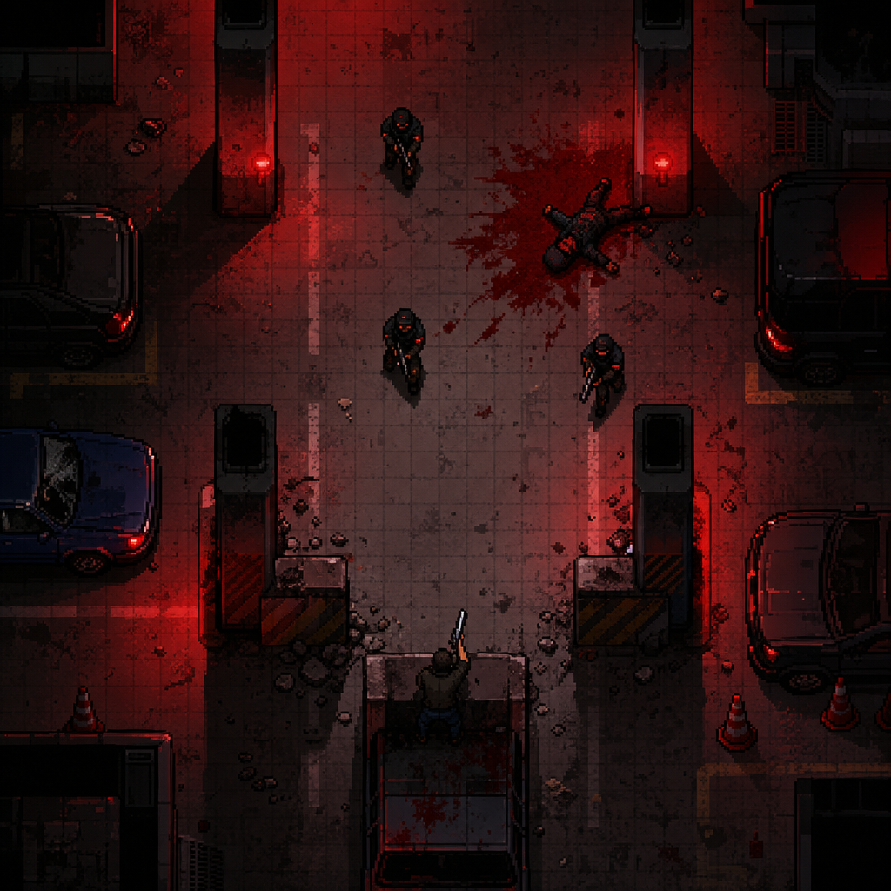
Pistols, a shotgun, an SMG you can only get by taking it off a Cage operative. The fastest way to redline a whole district's Heat. For the runs you've already decided not to walk away from.
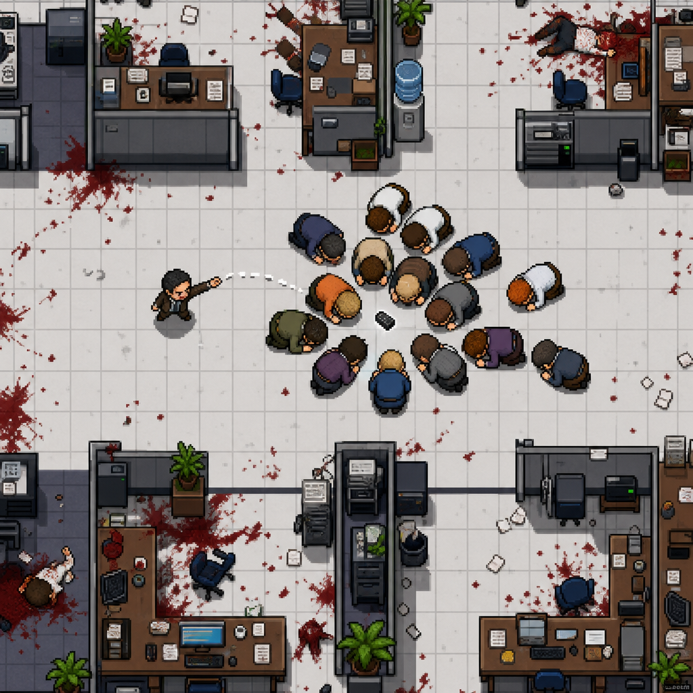
Molotovs, bricks, throwing knives, a well-timed distraction. A few per fight, gone when used. For making a doorway, a diversion, or a sudden change of everyone's plans.
These don't really deal damage. They exploit what people are, their hunger, their boredom, their bureaucracy, their need to be seen reading the right thing.
A USB or printed dossier. Stuns a regular citizen for four seconds while they read it. Distracts an enforcer for two.
Stuns a regular citizen for six seconds while they eat it. The Cage will ignore it entirely, they know what it is.
A chance to make low-level enforcers hesitate, defect, or flee. Scales with your Yap Game and Clout skills.
Cuts Cage radio backup for thirty seconds. Long enough to finish a fight you should not be able to win.
A four-second blind cone for anyone looking at it, and the photo it takes counts as hard, court-grade evidence.
For ten seconds, NPCs start verifying each other instead of you. Walk through the gap they make.
Your character sheet is the spine of every system. Skill checks fire from it constantly, in dialogue, on the corkboard, in combat, during a social call. Skills level by use, not body count. The Cage doesn't track kills; it tracks publications. Level a skill from 0 to 10, hit milestones, earn talent points. Some talents are mutually exclusive: no playthrough has everything.
That's six attributes of four. The seventh, Gut, has no skills at all. It just quietly governs your Cope, your composure under fire, and whether you get back up after going down. The body keeps the score.
Two disposition axes emerge from your choices, independent of any single stat. GNOY ↔ AWAKE measures how clearly you see the machinery. PASSIVE ↔ REBEL measures whether you act on it.
Your position on the quadrant gates which endings are even available to you. Most builds drift naturally, but a high-Awakened Passive player and a high-Awakened Rebel player are playing two entirely different endgames.
Your outfit is a disguise. Walk into the Plaza in full tactical gear and Heat spikes the moment you step off the subway. Walk into a Cage checkpoint in a press blazer and they wave you through. Set bonuses reward committing to a look, they unlock special abilities, passive boosts, and entire dialogue paths that otherwise stay locked.
Head · Face · Neck · Shoulders · Chest · Wrist · Hands · Waist · Legs · Feet · Back · two Accessory slots · Main Hand · Off Hand.
Each slot grants flat attribute bonuses, skill bonuses, Heat modifiers, and (at higher rarities) unique abilities. Most items have a quality tier color stripe so you can read a loot drop at a glance.
The example shown is a mid-game Press Cover loadout, perfect for getting waved through Cage checkpoints while still carrying a Camera Flash and a seized badge in the accessory slot.
Through side quests and in-dialogue puzzles, you recruit specialists. Each one fills a role that unlocks new gameplay layers. Loyalty is an ongoing resource. It drops from neglect, broken promises, Credibility collapse, and competing faction offers. Recruits can be captured in raids, broken under interrogation, or quietly turned into informants planted back into your crew. Once lost, gone forever.
There is no XP bar for this. The Awakening is a hidden track from one to ten, and the game will never once show you the number, it makes you feel it instead. The color drains out of branded spaces a little more each level. The cheerful mall music starts hitting wrong notes, then skipping, then rotting toward silence. Your HUD develops a stutter. Resistance scrawl bleeds into the edges of menus that used to be clean. The interface itself is waking up at exactly your pace, and neither of you can be re-sold the dream once you've seen the wires behind it.
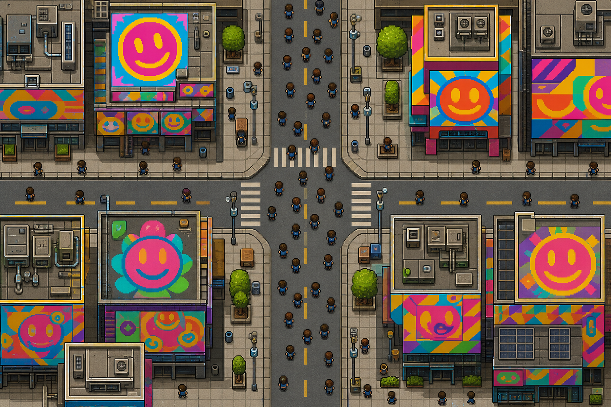
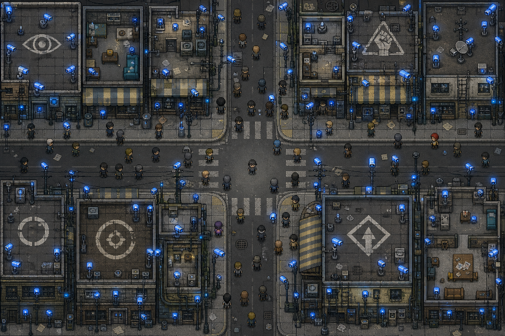
The more correct your investigation gets, the more dangerous and discredited you become.
At low Awakening they are quiet. At high Awakening + high Fatigue they become a full chorus and you become an unbelievably sharp investigator who can no longer pass for normal. Sharp or sociable. Pick one.
"You can make that gap. Probably. The version of you that ate vegetables definitely could."
"He's still talking. He won't be, in about a second and a half."
"Put the bag down. It's not food. It's a leash with a flavor."
"Give me the dead remote, two screws, and a paperclip. I'll give you somebody else's problem."
"Three more tabs. We're so close. We'll sleep when we've found the deleted version."
"You've read this exact press release four times this year. New logo. Same sentence."
"There's a street sign in the reflection on his sunglasses. That's an address. That's enough."
"Crop it here, drop the saturation, there. Now the truth looks as fake as the lie did."
"Nice jacket. Nice questions. Nobody's this interested in you for free."
"Don't give them the data. Give them the one number that ruins their dinner."
"That symbol on his ring is page four hundred of a book they prayed you'd never finish."
"Stop arguing with him. Just ask when he last felt like any of this was his idea."
"Smile. Lean in. He'll hand you the keys and thank you for taking them."
"Nod. 'Great point.' Sip the coffee. You're a houseplant. Houseplants don't get questioned."
"He left himself wide open. One sentence and the room stops respecting him. Say it."
"It's not enough to be right. Be right where forty thousand people are about to scroll."
"Camera sweeps left in four seconds. Be a wall by then."
"Untuck one corner of the shirt. Perfect people get stopped. Be a Tuesday."
"A feeling won't hold up. Photograph it. The denial is already being written."
"They'll know it was you. The only thing we control is how many days from now."
"I know a guy. The guy knows a guy. The second guy is the one you actually want."
"Back it up encrypted before you sleep. A cell is temporary. A leaked drive is forever."
"Don't send it, walk it. Hand to hand leaves no logs and no screenshots."
"Their tower, their wattage, your words. Ninety seconds where the whole district hears you."
Every voice is one of your 24 skills, talking back. The better you get at a thing, the louder its opinion, which is why the sharpest investigator in the city is also the one muttering at strangers.
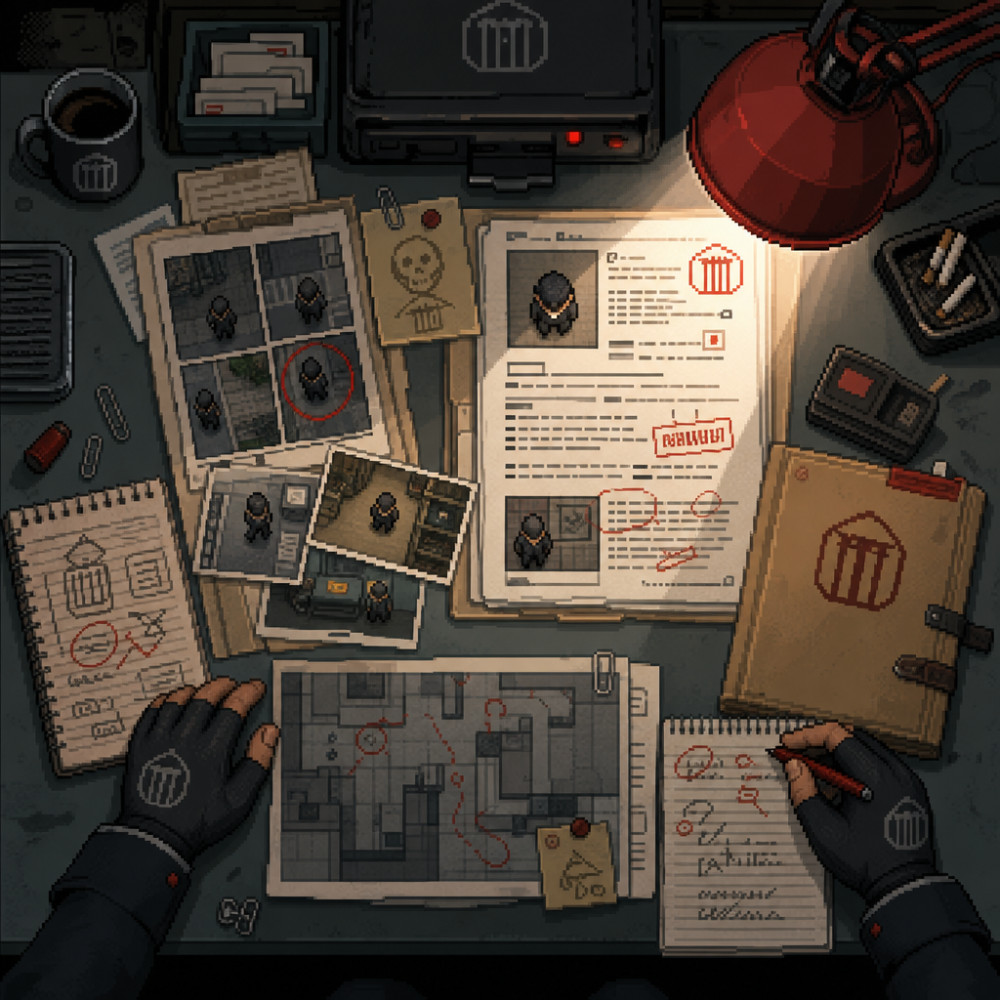
That's the whole point. The Cage keeps a single shared file on you, fed by operative reports, your own publications, and any Gnoy who saw your face and later got interrogated. You only feel it second-hand: more checkpoints as your Heat climbs, squads that arrive pre-built to counter your exact playstyle, Feed segments that weaponize your own evidence patterns. Lean on one tactic too long and the file learns you. OPSEC buys delay; it never buys invisibility.
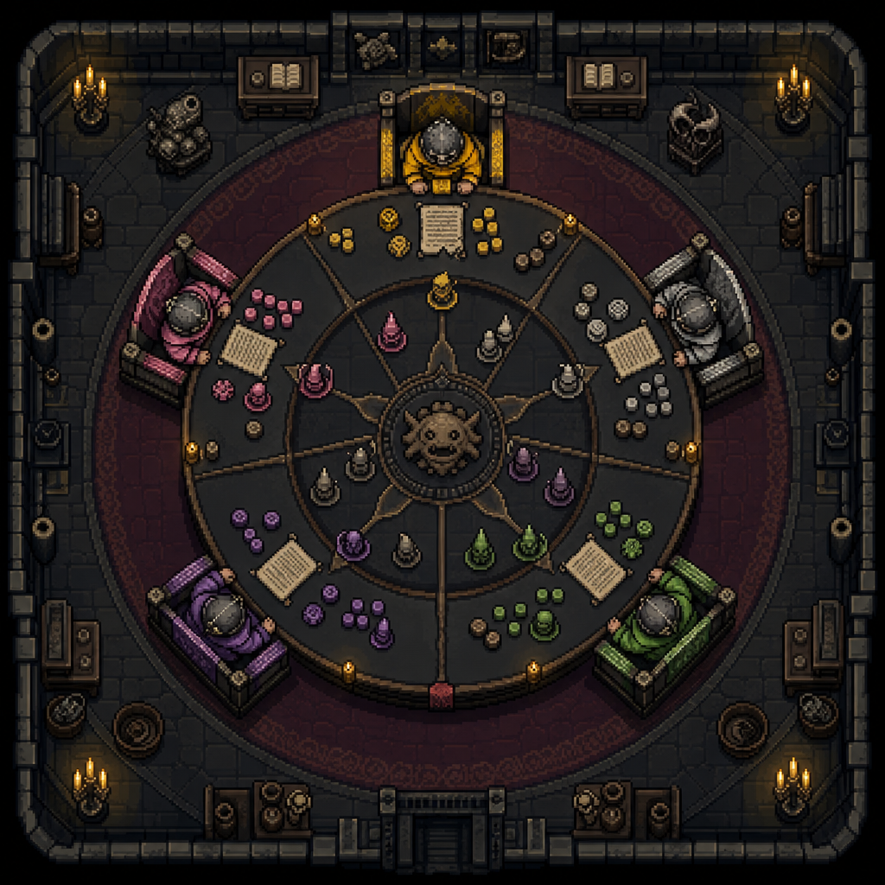
Thirteen bosses, five factions, and the Inner Ring, running as a real simulation that ticks forward every week with or without you. They get promoted, betray each other, call in blackmail, and fill the empty chair when one goes down. Your moves are inputs, not scripts: take out the Innovation Czar and the sim decides who climbs into his seat, who tries to stop them, and whether the Cage exploits the mess. Play kingmaker from the shadows, leak to a rival, plant a false file, set the Cage and the Feed on each other, then watch it resolve on its own terms.
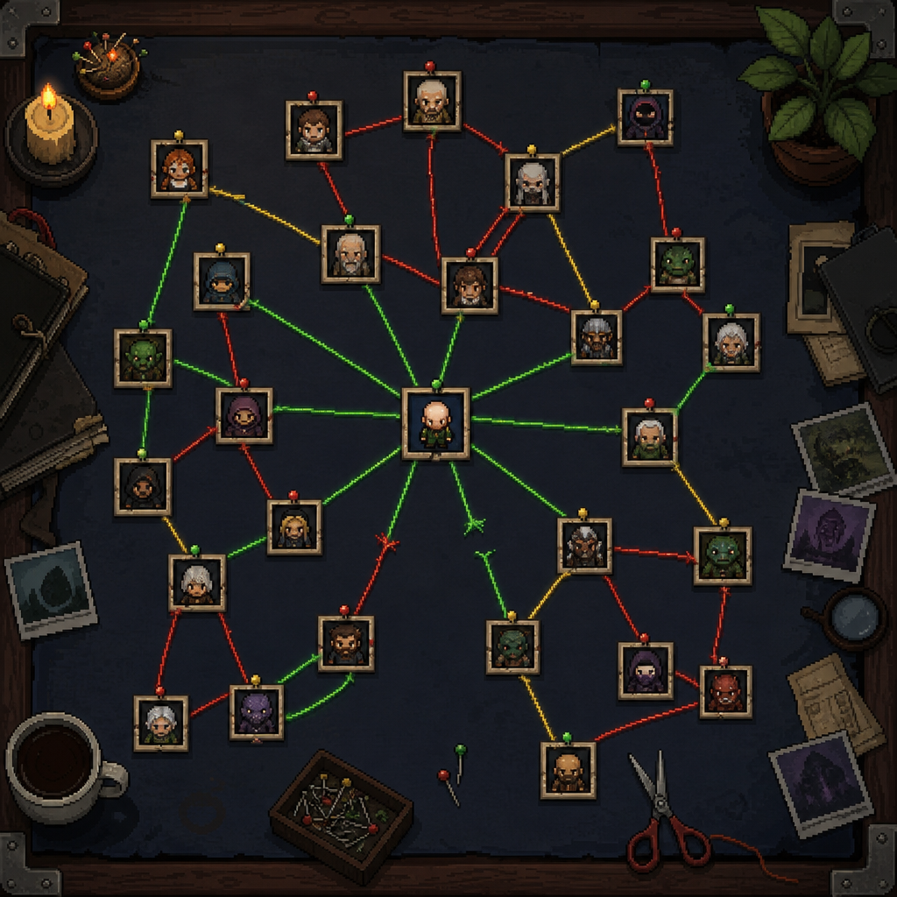
Every Gnoy you talk to keeps a private memory of exactly what you said, and they gossip, a rumor you start in The Hollow takes real in-game weeks to surface across town. It's all diegetic: sit at your apartment laptop, re-read your own conversation log, catch where the Feed misquoted you, or notice that a throwaway line from three weeks ago is about to get someone killed. The friendliest bartender in the game is also a witness.
Some you beat with documents. Some with dialogue, in a multi-stage composure duel where the wrong framing costs you evidence and Heat. Some by handing them to a rival faction and letting them eat each other. Defeat is permanent. The Politburo fills the role with a successor, but that individual is gone forever.
Won't call you a liar, just appends seventeen citations and a tone of patient disappointment until the room forgets what you said. Funded, it turns out, by the people he keeps clearing.
The most reassuring face in the country. Knows exactly what he does every night and physically cannot stop. You don't shoot him, you make him hear himself, live, on air.
Didn't write the lies, just the algorithm that picks which one you see before bed. "We only built the tool," he says, from a house the tool bought.
Gives a TED talk about how the slop is actually good for you, with the radiant calm of a man who has never once eaten it.
Owns the dirt under your building and three towns you've never seen. Speaks gently of "stewardship" and "legacy"; apologizes only when it's free.
Spent four years regulating the industry and the next twenty being paid by it. Knows every loophole intimately, he left them open himself.
Sells a private jet's worth of certainty on a layaway plan. Folksy off-camera, on fire on it; the collection plate takes tap, chip, and crypto.
Launders an agenda into a "study" and the study into an op-ed by Tuesday. Gentle, professorial, and quietly funded by whoever needed that conclusion.
Treats a real-estate grievance as a divine mandate, quoting scripture and zoning code in the same breath. The paperwork shows the holy cause is line-item funded by a bank that believes in none of it.
Builds your surveillance profile like a craftsman builds a chair, slowly, lovingly, proud of the joinery. The most dangerous man in the game, and the most polite.
The most supportive, most radical, most helpful member of your cell. Says exactly what you want to hear, because someone told him what you wanted to hear. There may be more than one.
Gives half his fortune away on camera and makes it back twice by lunch. Avuncular, generous, never once actually hostile. That's the unsettling part.
Has read your file before you sit down and addresses your weaknesses warmly, by line item. Beats you with customer-service patience; you beat him by refusing to apologize for the balance.
Nobody fires a starting gun. There's no point-of-no-return cinematic, no quest marker that reads FINALE. When your read on the Inner Ring is sharp enough and your disposition sits where it needs to, you decide it's over and you move. The game will not tell you you're ready. It will not tell you you're wrong.
You take it all public at once and the dam breaks. For forty-eight hours the Feed can't find the narrative and the whole country gets to see the wires. What anyone does with that is, terrifyingly, no longer up to you.
You don't burn the Arrangement down. You take its chair. The machine runs exactly as before, fed, obedient, only now your hand is on the lever, and you tell yourself that's different.
You destroy everything you can reach and accept you won't be remembered correctly, if at all. Some fires aren't lit to win. They're lit so the next person can see by them.
You walk away from the war and build something small, real, and slow. You disappear into it. The most patient ending, and depending on the day, either the wisest or the most cowardly.
You put it down. You re-subscribe; the first month is free for returning friends. The colors come back. The music resolves. The voices go quiet, one by one, until the apartment is clean and silent. The credits roll on a man who is, by every available metric, doing fine. The game does not punish you for this. It does not editorialize. It was always a real ending, and it was always right there.
Branded spaces are oversaturated, too vibrant, too clean. Resistance spaces are aged paper, hand-typed, marker-and-pencil annotated, slightly crooked. Both share one component grammar underneath. Both decay as you Awaken. The HUD does not narrate, the world does.
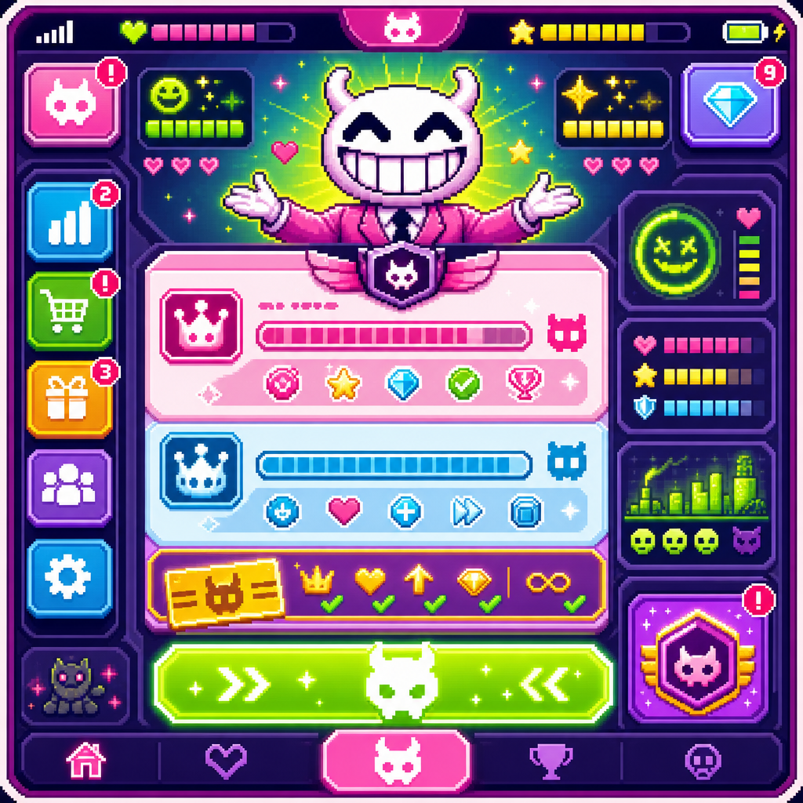
Geometric sans. Polished cards. Drop shadows. The aesthetic of an app you didn't choose to install. Everything is fine. Everything is in compliance. Everything is on sale.
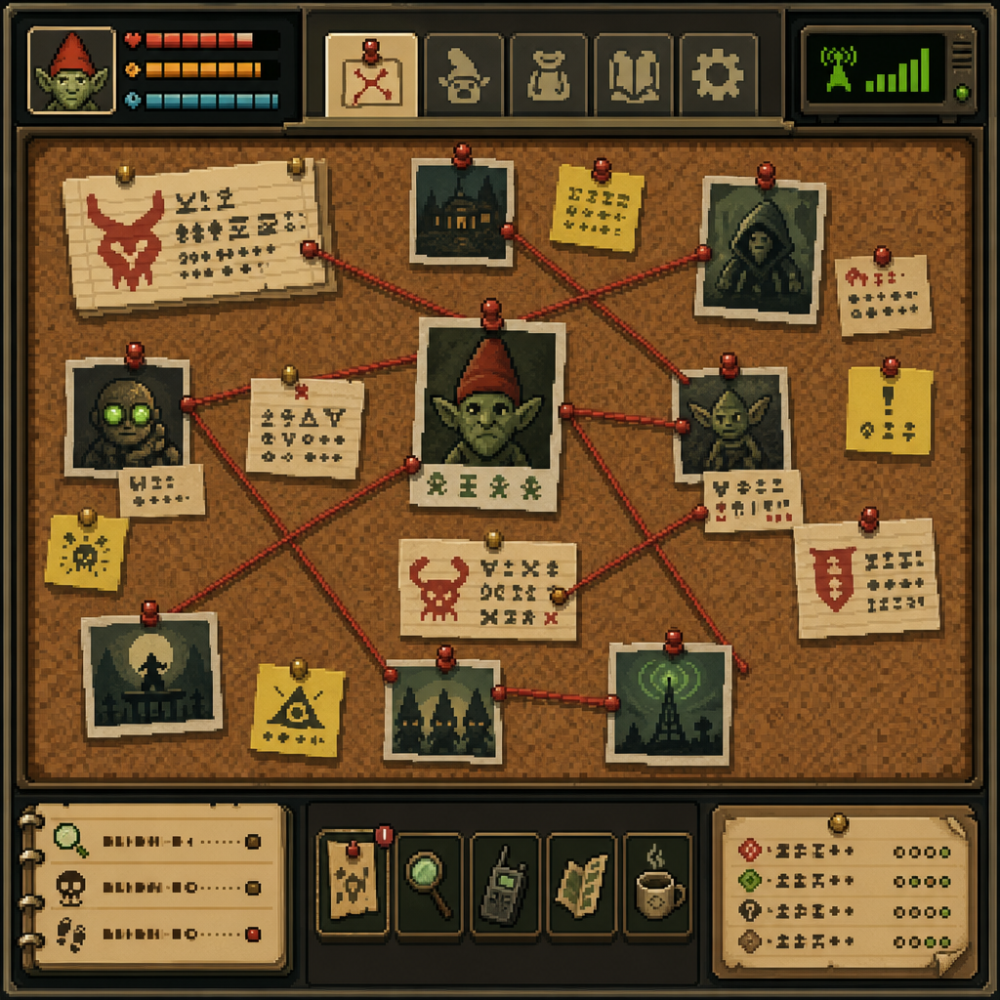
Aged paper. Red marker. Sticky notes. Index cards. Pirate-broadcast green. The aesthetic of a private investigator's bathroom. Slightly crooked, because the truth never sits straight.
It's the game where giving up is a real ending,
and finishing it is its own kind of grief.